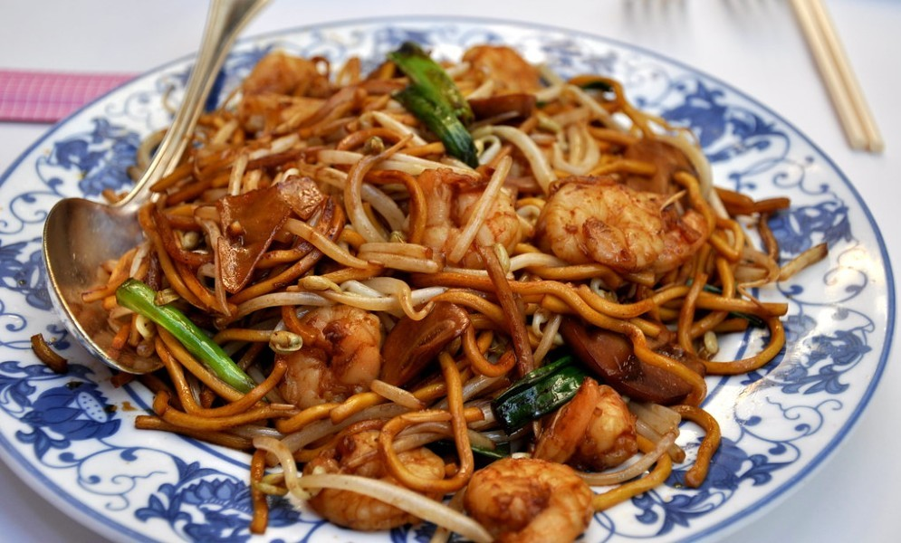

Emerillized Seafood Lo Mein

Credit to Grandpa Brown's Kitchen for this recipe and story.
Description:
I love fishing. So did my grandfather. I can remember getting up at the crack of dawn, sleepy eyed but excited. Driving to grandfather’s favorite fishing hole and finding the perfect spot along the bank. Quietly sitting there listening to the Whip-poor-wills calling to one another. I still remember the mist rising from the lake as the frogs join in the early morning song. I miss those days with grandfather. They are some of my favorite times. This recipe always reminds me of those times for some reason. I hope you like the recipe as much as I.
Ingredients:
- 5 tbsp peanut oil
- 1 lb thin Chinese egg noodles
- 2 tsp sesame oil
- 2 tbsp oyster sauce
- 2 tbsp soy sauce
- 1 tsp cornstarch
- 1/2 tsp black pepper
- 1 tbsp minced garlic
- 2 soft-shelled crabs cleaned, lungs removed
- 1/4 lb calamari body sacs cut into 1-inch pieces
- 1/4 lb small peeled de-veined shrimp
- 1/2 tsp red pepper flakes
- 1/2 cup 1/2-inch slices green onions tops only
- 4 oz straw mushrooms
- 4 oz snow peas ends snapped, strings removed
Steps
- Lightly grease 9-inch round cake pan with peanut oil. Bring a large pot of water to a boil. Add noodles & cook until tender.
- Lightly grease 9-inch round cake pan with peanut oil. Bring a large pot of water to a boil. Add noodles & cook until tender.
- Drain & transfer to large bowl.
- Toss with sesame oil & place in greased cake pan. In a large skillet, heat 2 tbl peanut oil over high heat.
- Add Add pepper flakes, green onions, mushrooms and snow peas, & cook stirring, for 1 min.noodle cake & fry over med-high heat, swirling to prevent sticking.
- Cook until golden brown on the bottom. Flip & brown other side. Remove & keep warm. In a small bowl , combine oyster sauce, soy sauce, salt & pepper, & still to dissolve cornstarch.
- In a large saute pan, heat the remaining 3 tbls of oil over med-high heat. A garlic & cook, stirring for 30 sec. Add crab quarters, & cook, stilling 30 sec.
- Add calamari, shrimp & scallops & cook stirring until the shrimp are pink & the seafood is just cooked through, about 2 min.
- Add pepper flakes, green onions, mushrooms and snow peas, & cook stirring, for 1 min.
- Add the oyster sauce mixture & cook until thickened.
- Serve immediately over noodle cake.